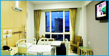

Dr. L. H. Hiranandani is the inspiration behind the edifice. He was born in 1917 in Thatta, Sind (Now in Pakistan). The family migrated to Mumbai in 1937. He completed his medical education in 1942. He was keen to further himself and went to England for his fellowship (FRCS). On his return to India in 1947, he joined The Topiwala National Medical College and B.Y.L Nair Hospital, Mumbai as Honorary Ear, Nose and Throat Surgeon. In this hospital he rose to be the Head of Department.
Under his stewardship the department of ENT attained vibrancy. He initiated several operating teachings which are known as "Dr. Hiranandani's Operations" globally. He was instrumental in initiating the concept in India that Head and Neck surgeries come under the domain of the ENT surgeons.
The first such department was setup in B.Y.L Nair Hospital in 1972. The department is known as "Dr. Hiranandani's Department of Otolaryngology and Head & Neck".
Dr. Hiranandani's work has earned him many accolades. The American Society of Head & Neck Surgery elected him as their first Indian member. The International Federation of Otolaryngology and Head & Neck Societies awarded him the "Golden Award" the first Indian and fifth in the world to receive it. He has been voted as "Millennium ENT" by SAARC Countries.
Social causes have deeply motivated him. In 1973 he gave up a vibrant private practice to undertake social work in drought areas of Maharastra for period of 8 months. He has directed aid for the flood affected people in Orrisa and Bihar. He was awarded "Maulana Azad Award" by Indian National Congress in recognition of exemplary work during 1993 communal riots in Mumbai. In the field of medical ethics he has spear-headed the passing of the Human Organs Transplantation Bill by Lok Sabha in 1994. By this act the buying of kidneys is declared as a crime. His humane nature made him stand up for the rights of people and fight against capital punishment and euthanasia.
He has won other public awards such as, in 1972, was awarded "Padma Bhushan" by President of India. In 1988, was conferred the "Dhanvantari Award", first time awarded in the field of ENT, for his notable contribution to science of medicine.